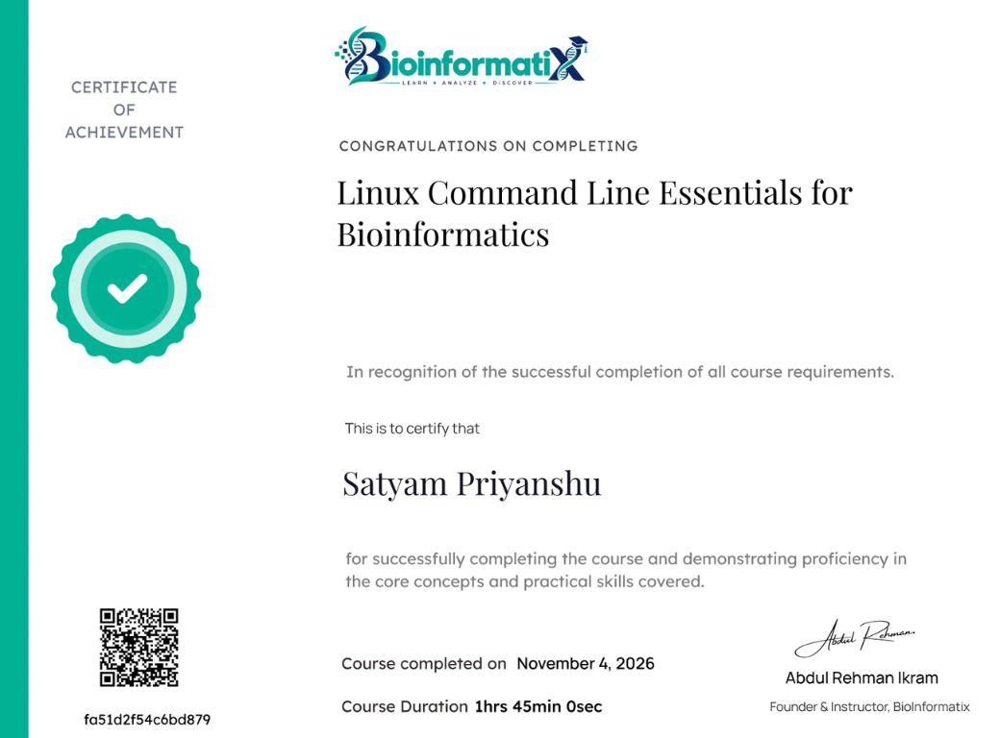
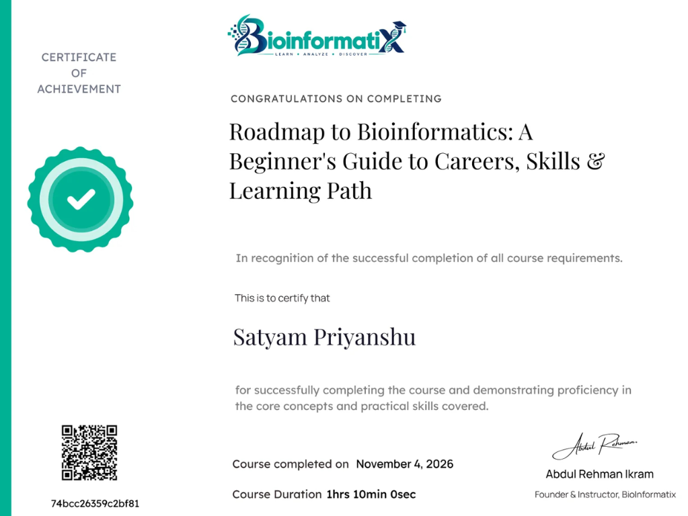
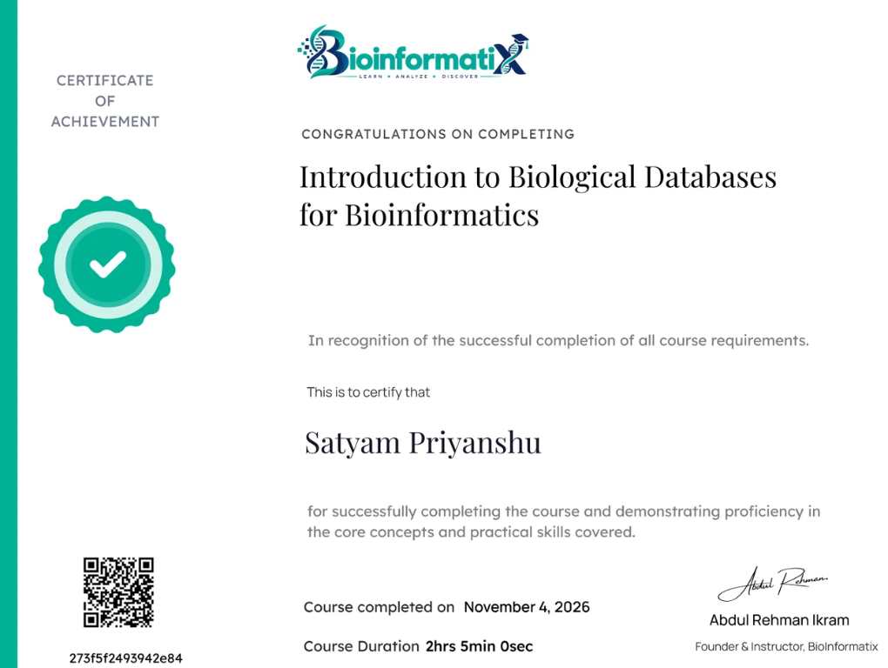

UNDERGRADUATE · IN PROGRESS
B.Tech in Genetics and Artificial Intelligence
Lovely Professional University
SATYAM PRIYANSHU · GENETICS × AI
Genetics & Artificial Intelligence Undergraduate
I explore the intersection of genetics, computational biology, bioinformatics and artificial intelligence to understand complex biological systems.
About me
I’m Satyam Priyanshu, a B.Tech undergraduate at Lovely Professional University, specializing in Genetics and Artificial Intelligence.
I’m interested in how computational biology, bioinformatics and machine learning can help us understand complex biological systems—from molecular processes to future possibilities in precision medicine.
Education
UNDERGRADUATE · IN PROGRESS
Lovely Professional University
CLASS XII
Sasbahna College
CLASS X · CBSE
Loyola School
Computational genetics · Bioinformatics · AI in healthcare
Research interests
An evolving map of questions at the intersection of living systems and intelligent tools.
Select a field to mark it as a current focus.
Technical skills
A developing toolkit, grounded in coursework and self-directed exploration.
Core languages for exploring ideas, working with data and building computational foundations.
Projects
Learning projects exploring how code and biological data can work together.
An exploration of nucleotide composition, GC content and sequence variation through simple computational workflows.
A learning project investigating data preprocessing, feature selection and classification for biological data.
Exploratory academic projects; not clinical tools or validated diagnostic systems.
Certificates · Bioinformatix
Three bioinformatics course certificates completed November 4, 2026.

View certificateBIOINFORMATIX · NOV 04, 2026
Course duration: 1 hr 45 min
ID fa51d2f54c6bd879

View certificateBIOINFORMATIX · NOV 04, 2026
Course duration: 1 hr 10 min
ID 74bcc26359c2bf81

View certificateBIOINFORMATIX · NOV 04, 2026
Course duration: 2 hr 5 min
ID 273f5f2493942e84
Contact
Whether it’s a conversation about computational biology, a shared curiosity, or an opportunity to learn—I’d be glad to hear from you.
satyampriyanshu2@gmail.com